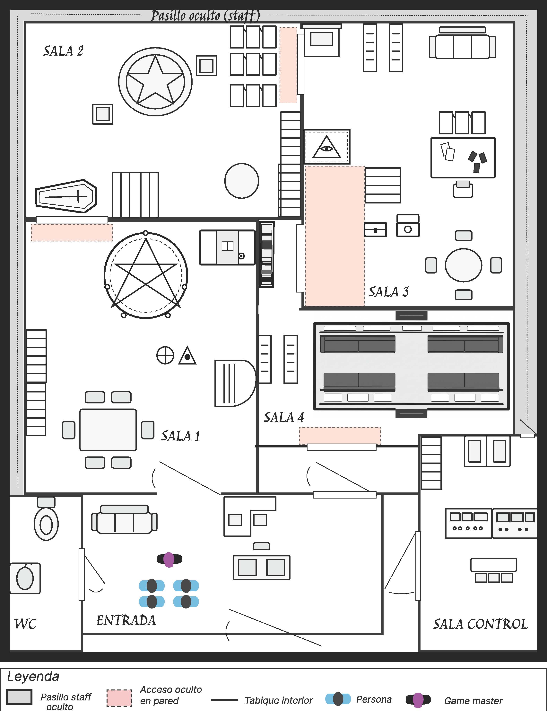

01
Despacho de Dunning
Origen del conflicto
Expedientes académicos, luz ultravioleta y descubrimiento del papel rúnico.
Una investigación sobrenatural inspirada en M. R. James. Cuatro salas, sesenta minutos y un documento que debe volver a las manos de quien lo envió.
Explorar propuesta«Descubrid qué está ocurriendo, averiguad cómo romper la maldición y devolved el documento a Karswell antes de la salida del tren».
Los jugadores colaboran con Dunning después de que este encuentre entre sus documentos un extraño papel con caracteres semejantes a runas. Karswell abandonará Londres en el último tren dentro de 60 minutos.
La experiencia está diseñada para que nadie necesite conocer previamente el cuento: cada prueba revela una parte nueva del conflicto y prepara la siguiente.
El recorrido entre salas es lineal, pero en las salas 2 y 3 el grupo puede dividirse para resolver dos pruebas en paralelo.
Expedientes académicos, luz ultravioleta y descubrimiento del papel rúnico.
El grupo reconstruye el caso de John Harrington y descubre que la amenaza ya ha ocurrido antes.
El calendario concreta el último día y el papel revela la forma de romper la maldición.
Billete, equipaje y portabilletes conducen a la devolución final del documento.
Los jugadores identifican el expediente de The Truth of Alchemy y descubren el origen del conflicto.
La luz UV revela símbolos ocultos y la fecha en que Dunning recibió el papel.
Documentos fechados permiten reconstruir cronológicamente los últimos meses de John Harrington.
Fragmentos parcialmente quemados revelan que destruir el documento no detiene la amenaza.
El calendario permite trasladar el plazo de Harrington al caso de Dunning y descubrir la fecha límite.
El papel rúnico se superpone con una página del libro de Karswell y revela la regla de devolución.
El grupo localiza a Karswell en el vagón y aplica todo lo descubierto para devolverle el papel.
Sustituye la imagen de ejemplo por tu plano definitivo con las ubicaciones P1–P7.

De un despacho cálido y reconocible a espacios más fríos, contrastados y oscuros.
Silencio, golpes lejanos, avisos de estación y finalmente ruedas, vapor y silbato.
UV, sensores, imanes y mecanismos ocultos integrados en la escenografía.
Supervisa desde control y ofrece pistas progresivas sin romper la inmersión.
Las pruebas paralelas de las salas 2 y 3 permiten repartir al grupo.
Un único reloj general de 60 minutos acompaña toda la experiencia.
El papel vuelve al portabilletes de Karswell. El reloj se detiene, suena la locomotora, el vagón vibra y la salida se desbloquea.
El tiempo llega a cero. Las luces descienden y una voz anuncia: «Ha llegado vuestra hora».
El objetivo no es que el jugador recuerde el cuento. El objetivo es que lo reconstruya, lo comprenda y termine formando parte de él.